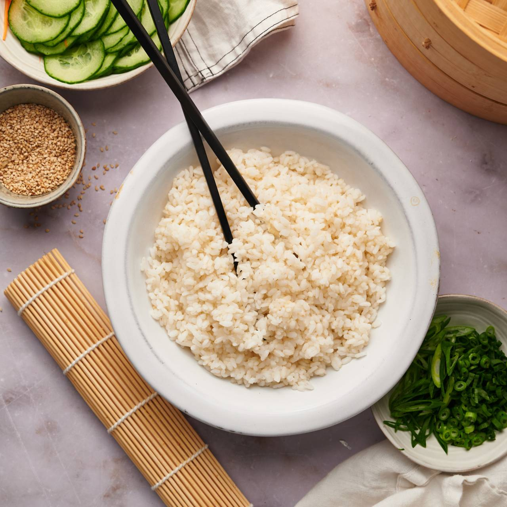

Sushi Rice

Description
Perfect sushi rice for creating perfect sushi rolls
Ingredients
- 3 cups of sushi rice
- 3.5 cups of water
- 0.5 cup of rice vinegar
- 2 tablespoon white sugar
- 2 teaspoon fine salt
Steps
- For the seasoning, heat the rice vinegar with the sugar and salt in a pot or microwave until fully dissolved
- Rinse the sushi rice thoroughly and cook it in a pot with a thick bottom (or rice cooker)
- Once rice is ready, transfer to wooden or plastic container. Do not cover
- Pour seasoning evenly over rice and mix with a wooden spoon in a cutting motion
- Let rice cool down to room temperature by the window or with a fan, but never in the refrigerator